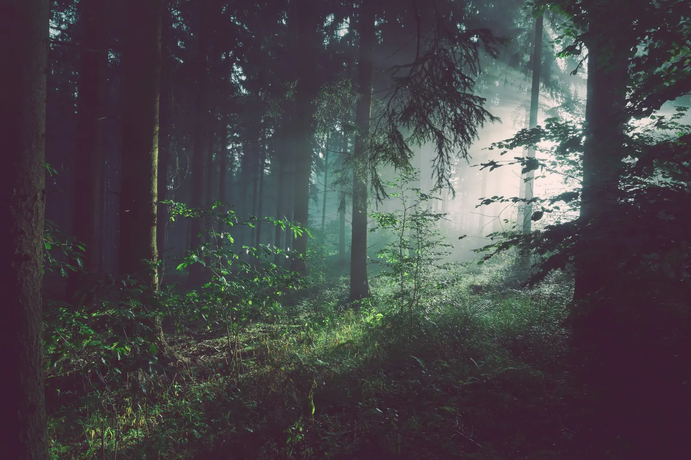
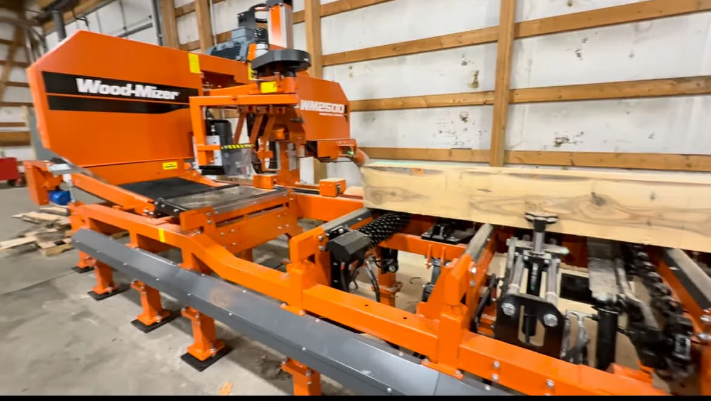
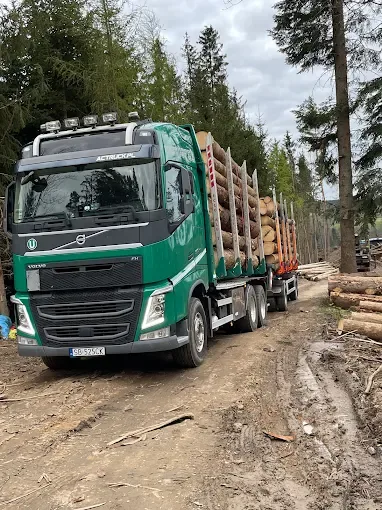
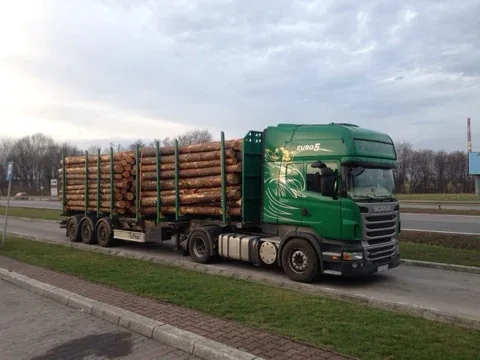
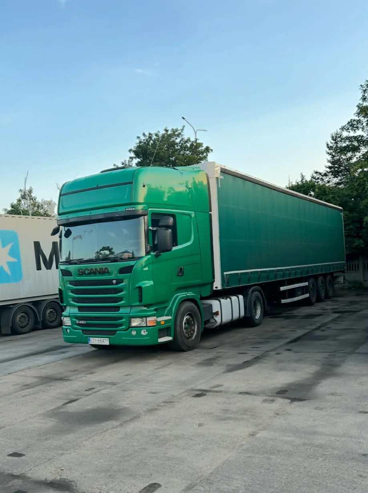

Tarcica liściasta
Wyselekcjonowana tarcica do produkcji mebli, schodów, podłóg i wykończeń wnętrz.
- Dąb
- Jesion
- Buk
Sucha i mokra, przygotowana pod zamówienie

Tarcica liściasta i iglasta, sucha i mokra, z certyfikatem FSC®. Przygotowujemy ją pod Państwa zamówienie i dowozimy własnym transportem w całej Unii Europejskiej.
Każda deska z naszego tartaku przechodzi tę samą drogę: wybór drewna, cięcie na naszych maszynach i dowóz naszym samochodem. Dlatego odpowiadamy za jakość od początku do końca.
Drewno liściaste i iglaste z certyfikatem FSC®, czyli z lasów prowadzonych w sposób odpowiedzialny.
Cięcie na nowoczesnej trakowej pile Wood-Mizer, z dokładnością, której wymaga stolarnia i budowa.
Tarcicę wozimy własnymi ciężarówkami, na terenie całej Unii Europejskiej, w umówionym terminie.
Specjalizujemy się w tarcicy przygotowanej pod konkretne zamówienie. Obie grupy dostępne w wariancie suchym i mokrym.
Wyselekcjonowana tarcica do produkcji mebli, schodów, podłóg i wykończeń wnętrz.
Wysokogatunkowa tarcica na konstrukcje, więźby, budowę i do prac stolarskich.
Potrzebują Państwo konkretnego gatunku, wymiaru lub ilości? Prosimy o krótką wiadomość, odpowiemy z wyceną.
Zapytaj o wycenę
Historia naszego tartaku sięga lat 90. XX wieku. Przez lata inwestowaliśmy w park maszynowy i poznawaliśmy drewno, dlatego wiemy, jak wybrać i przeciąć surowiec, żeby tarcica spełniała Państwa wymagania. Stawiamy na rzetelność, terminowość i zadowolenie klientów.
Zielone ciężarówki CONEX wożą drewno z lasu do tartaku i gotową tarcicę do klientów.
Nie czekamy na wolnego przewoźnika. Własna flota pozwala nam ustalić termin dostawy i go dotrzymać, także przy większych zamówieniach i za granicą.



Prosimy napisać, jaki gatunek, wymiar i ilość Państwa interesuje. Chętnie odpowiemy na każde zapytanie ofertowe.
Telefon
+48 693 763 842 +48 609 671 916 conex@poczta.onet.plSiedziba i tartak
ul. Jaśminowa 2
34-340 Przyborów
woj. śląskie